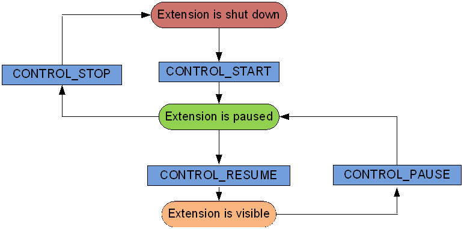

com.sonyericsson.extras.liveware.aef.control.Control
com.sonyericsson.extras.liveware.aef.control.Control
|
|||||||||
| PREV CLASS NEXT CLASS | FRAMES NO FRAMES | ||||||||
| SUMMARY: NESTED | FIELD | CONSTR | METHOD | DETAIL: FIELD | CONSTR | METHOD | ||||||||
java.lang.Object
public class Control
Control API is a part of the Smart Extension APIs.
Some of our Smart accessories will support the Control API. The Control API enables the extension to take total control of the accessory. It takes control over the display, LEDs, vibrator, input events. Because of this, only one extension can run in this mode at a time.
Topics covered here:
Before a Control extension can use an accessory, it must use the Registration API
content provider to insert a record in the extension table. It must also register
information in the registration table. This must be done for each Host Application
that the extension wants to interact with.
In order to find out what Host Applications are available and what capabilities they
support, the extension should use the Registration API.
After a successful registration, the extension can start communicating with the Host Application. Since an extension implementing this API takes complete control over the accessory, only one extension can run at a time.
An extension cannot just start executing whenever it wants, it needs to make sure that
no other extension is running, therefore the extension can only request to be started,
Control.Intents.CONTROL_START_REQUEST_INTENT. When the Host Application is ready to give
control to the extension it will send a Control.Intents.CONTROL_START_INTENT, see figure
below.

When the extension requests to start controlling the accessory, the Host Application can
either accept the request and give control to the extension, or if something is not right
the Host Application can send a Control.Intents.CONTROL_ERROR_INTENT. See
Control.Intents.EXTRA_ERROR_CODE for different error codes that the Host Application can send.
The Control.Intents.CONTROL_RESUME_INTENT is sent when the extension is visible on the accessory.
From this point on the extension controls everything, the Host Application just forwards the
information between the accessory and the extension.
An extension can also be paused, either if a high priority extension needs to run for a
while or if the Host Application is in charge of the display state and the display is
turned off. In this case the Host Application sends a Control.Intents.CONTROL_PAUSE_INTENT
to the extension. This means that there is no point for the extension to update the display
since it is either turned off or someone else has control over it. If the extension would
break this rule and try to update the display anyway, the Host Application will ignore these
calls.
When the extension is in a paused state, it no longer has control over the display/LEDs/
vibrator/key events. As an example, one could say that a telephony extension has high priority.
E.g. when a random extension is running and the user receives a phone call. We want to pause
the running extension and let the telephony extension display the caller id on the accessory
display. When the phone call ends, the telephony extension is done and the other extension can
resume its running, it will then receive a Control.Intents.CONTROL_RESUME_INTENT.
When the Control.Intents.CONTROL_RESUME_INTENT is sent from a Host Application, the extension is
once again in charge of everything.
When the user chooses to exit the extension, the Host Application will send a
Control.Intents.CONTROL_PAUSE_INTENT followed by a Control.Intents.CONTROL_STOP_INTENT.
From this point on the Host Application regains control.
If the extension would like to stop itself when running, like the telephony extension, it can
send a Control.Intents.CONTROL_STOP_REQUEST_INTENT to the Host Application. The Host Application
will then make sure to stop it and send a Control.Intents.CONTROL_STOP_INTENT.
If the extension was not already paused, then it will be paused before it is stopped and a
Control.Intents.CONTROL_PAUSE_INTENT is sent before the Control.Intents.CONTROL_STOP_INTENT.
In case another extension has been paused it will be resumed.
Extensions implementing this API have the possibility to control the state of the accessory
display. The display can be controlled via Control.Intents.CONTROL_SET_SCREEN_STATE_INTENT.
It is important that you program your extension so that it consumes as little power as possible, both on the phone side and on the accessory. The accessory has a much smaller battery then the phone so use this functionality with caution. When possible, let the Host Application take control of the display state. That way you don't have to bother about the power consumption on the accessory. You can do this by setting the display state to "Auto".
By default when your extension starts the display state will be set to "Auto", which means that the Host Application controls the on/off/dim behavior. If the extension wants to control the display state it must explicitly change the state.
If the extension controls the display state and you get a Control.Intents.CONTROL_STOP_INTENT, meaning
your extension is no longer running, the Host Application will automatically take over the display
control.
Note that when in "Auto" mode, the extension will receive a Control.Intents.CONTROL_PAUSE_INTENT when
display is off and a Control.Intents.CONTROL_RESUME_INTENT when the display goes back on.
Some accessories may support an additional display mode where information can be shown to the
user while keeping the battery consumption to a minimum. In this active low power mode, the
accessory may display content in a lower color depth.
Accessories with support for active low power mode indicates this in
Registration.DisplayColumns.SUPPORTS_LOW_POWER_MODE.
If the control extension wants use the active low power mode it must set the
Registration.ApiRegistrationColumns.LOW_POWER_SUPPORT to TRUE when registering with a Host
Application.
If both the extension and the accessory support active low power mode, this mode will be
activated when the screen would otherwise go off.
This means that if screen state is Control.Intents.SCREEN_STATE_AUTO the accessory will decide when to
enter active low power mode.
If screen state is Control.Intents.SCREEN_STATE_ON, Control.Intents.SCREEN_STATE_AUTO or
Control.Intents.SCREEN_STATE_DIM the extension can put the display in active low power mode
by setting the screen state to Control.Intents.SCREEN_STATE_OFF.
The Control.Intents.CONTROL_ACTIVE_POWER_SAVE_MODE_STATUS_CHANGED_INTENT intent is sent to the
extension when the display enters active low power mode both when the active low power
mode is initiated by the accessory and extension.
When in active low power mode, the extension is expected to provide display
content through the same intents as in normal display mode.
The extension can update the display in the same ways as in normal display mode.
If the screen state is Control.Intents.SCREEN_STATE_AUTO and the display was put in active
low power mode by the accessory, the accessory also decides when to leave the active
low power mode.
In this mode, the extension will not receive any input events from the accessory as these
will cause the display to leave the active low power mode.
If the display was put in active low power mode by the control extension, it is the
responsibility of the control extension to decide when to leave the active low power mode
by setting the screen state to Control.Intents.SCREEN_STATE_ON or Control.Intents.SCREEN_STATE_AUTO.
If the extension wants to get input events when the screen is in active low power mode, it must
manually put the display in active low power mode.
When the display leaves the active low power mode, a
Control.Intents.CONTROL_ACTIVE_POWER_SAVE_MODE_STATUS_CHANGED_INTENT will always be sent to
the extension and the extension is expected by update the display with new content.
The accessory might have one or more LEDs that are used to notify the user about events. The
extension can find information about the LEDs for a certain accessory via the Registration API.
If the accessory has LEDs, the extension can control them via the Control API. The LEDs can be
controlled via the Control.Intents.CONTROL_LED_INTENT.
Note that the Host Application might overtake the control of the LED at any time if it wants to
show some important notifications to the user, e.g. when the accessory battery level is low.
The extension is unaware of this so it might still try to control the LEDs but the Host
Application will ignore the calls.
Our accessories might or might not have a vibrator. The extension can find this out by checking
the capabilities of the Host Application via the Registration API. If the accessory
has a vibrator, it is controllable via the Control API, Control.Intents.CONTROL_VIBRATE_INTENT.
The accessory might have several hardware keys. Your extension will receive the key events when
one of the keys is pressed. The Control.Intents.CONTROL_KEY_EVENT_INTENT is sent to the extension when
a user presses a key on the accessory.
The Intent carries a few parameters, such as the time stamp of the event, the type of event
(press, release and repeat) and also the key code. The accessory might have one or more keypads
defined. Extensions can look this up in the Registration API. Each key will have a
unique key code for identification. Key codes can be found in the product SDK.
The accessory might support several kinds of tap actions, such as
single/double/triple tap. To find out whether the accessory supports tap
actions see
Registration.TapColumns.
The Control.Intents.CONTROL_TAP_EVENT_INTENT is sent to the extension when
a user performs taps on the accessory.
Certain accessories might have a touch display. Extensions can find this information using the
Registration API. The Control.Intents.CONTROL_TOUCH_EVENT_INTENT is sent to the
extension when a user taps the accessory display.
If the Control.Intents.CONTROL_DISPLAY_DATA_INTENT is used to send images, then touch events with
display coordinates are delivered in the Control.Intents.CONTROL_TOUCH_EVENT_INTENT intents.
If a swipe gesture is detected then a Control.Intents.CONTROL_SWIPE_EVENT_INTENT is sent to the
extension instead.
If the Control.Intents.CONTROL_PROCESS_LAYOUT_INTENT is used to send layouts then some Views
in the layout may handle the touch events themselves.
Touch events are for example handled by views that have android:clickable or android:longClickable set to to true.
For these views, the extension is informed about clicks through the
Control.Intents.CONTROL_OBJECT_CLICK_EVENT_INTENT intent.
ListViews also handle touch event and report clicks in Control.Intents.CONTROL_LIST_ITEM_CLICK_INTENT
intents.
Touch events and swipe gestures that are not handled by Views in the layout are sent to the
extension through Control.Intents.CONTROL_TOUCH_EVENT_INTENT and
Control.Intents.CONTROL_SWIPE_EVENT_INTENT intents.
Since the extension is controlling the accessory, it also controls what is visible on the display.
The content visible to the user comes from the extension. Basically the extension sends images to
be displayed on the accessory display. To find out the dimensions of the display and the color depth
it supports, the extension can use the Registration API. The
Control.Intents.CONTROL_DISPLAY_DATA_INTENT is sent from the extension when it wants to update the accessory
display. Extensions can also clear the accessory display at any point if they want to by sending
the Control.Intents.CONTROL_CLEAR_DISPLAY_INTENT.
The extension can send images as raw data (byte array) or it can just send the URI of the image to
be displayed. Note that we are using Bluetooth as bearer which means that we can't send that many
frames per second (FPS). Refresh rate of the display can be found in the Registration API.
Starting with version 2 of the Control API, it is possible to send layouts to the accessory as an
alternative to sending images.
The subset of Android layouts that are supported is specified in Control.Intents.EXTRA_DATA_XML_LAYOUT.
Layouts are sent using Control.Intents.CONTROL_PROCESS_LAYOUT_INTENT.
The contents of the views in the layouts can be updated using Control.Intents.CONTROL_SEND_IMAGE_INTENT
and Control.Intents.CONTROL_SEND_TEXT_INTENT.
When using layouts, click events are delivered as Control.Intents.CONTROL_OBJECT_CLICK_EVENT_INTENT intents.
A layout may include a ListView.
The ListView is initiated by sending a Control.Intents.CONTROL_LIST_COUNT_INTENT.
This intent can include the list items in the Control.Intents.EXTRA_LIST_CONTENT.
If no Control.Intents.EXTRA_LIST_CONTENT is provided the Host Application will request
individual list items when needed through Control.Intents.CONTROL_LIST_REQUEST_ITEM_INTENT.
The Control extension can refresh the list content at any time by sending a new
Control.Intents.CONTROL_LIST_COUNT_INTENT intent.
This can be done both if additional items should be added or just if the existing items
should be refreshed.
The Control extension is notified about clicks on list items through the
Control.Intents.CONTROL_LIST_ITEM_CLICK_INTENT intent.
A ListView and its items must always fill the entire display width. The height of a list item must be less or equal to the height of the ListView.
Some lists may support a user initiated refresh.
The Control.Intents.CONTROL_LIST_REFRESH_REQUEST_INTENT is sent to the extension if
the user performs a manual refresh action.
The extension is expected to check its data source (for example trigger a poll to a server)
and update the list content.
If the number of items is changed a new Control.Intents.CONTROL_LIST_COUNT_INTENT should be sent.
If only the existing list items should be updated this is done through a number of
Control.Intents.CONTROL_LIST_ITEM_INTENT intents.
The Control extension interacts with the Gallery view in the same way as the ListView with the
addition that it is also notified about selected list items through the
Control.Intents.CONTROL_LIST_ITEM_SELECTED_INTENT intent.
A Gallery and its items must always fill the entire display width. The height of a list item must be less or equal to the height of the Gallery.
| Nested Class Summary | |
|---|---|
static interface |
Control.Intents
Intents sent between Control extensions and Accessory Host Applications. |
static interface |
Control.KeyCodes
Interface used to define constants for keycodes |
static interface |
Control.TapActions
Interface used to define constants for tap actions. |
| Constructor Summary | |
|---|---|
protected |
Control()
|
| Method Summary |
|---|
| Methods inherited from class java.lang.Object |
|---|
clone, equals, finalize, getClass, hashCode, notify, notifyAll, toString, wait, wait, wait |
| Constructor Detail |
|---|
protected Control()
|
|||||||||
| PREV CLASS NEXT CLASS | FRAMES NO FRAMES | ||||||||
| SUMMARY: NESTED | FIELD | CONSTR | METHOD | DETAIL: FIELD | CONSTR | METHOD | ||||||||